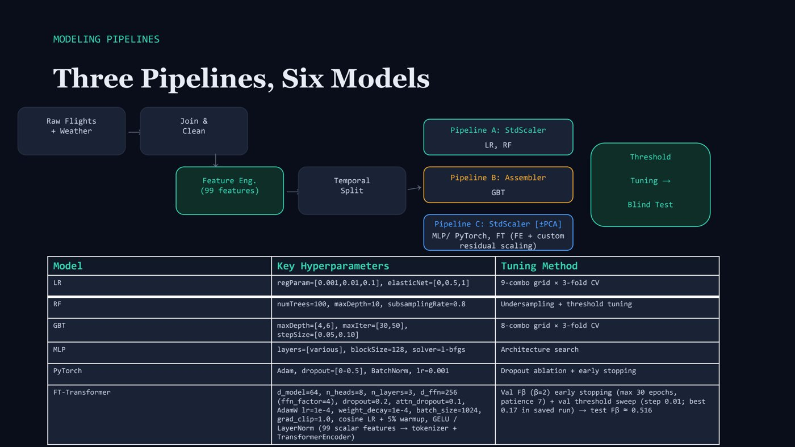
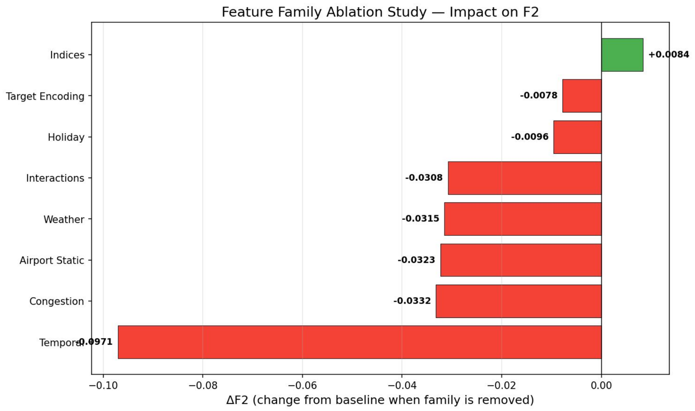

MayD(el)ay · flight delay prediction
Lessons learned
What we chose, what we gave up, and what would have gone wrong otherwise, from a project predicting delays for 31.7 million US flights.
A yes or no question
This is a classification problem: for each flight the model answers one yes or no question, “will it leave 15 minutes late or more?” It doesn't guess how many minutes. Under the hood it gives a probability, and a threshold turns that into a yes or no.
Why F2 and recall, not accuracy or F1
- Accuracy is misleading here. Only about one flight in five is delayed, so a model that always says “on time” is 80% accurate and catches nothing.
- Recall is the share of real delays the model catches. Precision is the share of its warnings that turn out to be real delays.
- F1 treats both as equally important, but they aren't. A missed delay strands passengers and crews, while a false alarm mostly means someone checks on a flight that turns out fine. Tuned for F1, the models would warn less and miss more delays.
- F2 counts recall twice as much as precision, which matches that difference in cost. So we tuned every model for F2, accepting more false alarms to catch more delays.
The threshold is where this tradeoff becomes concrete. For our PySpark neural network on validation data:
| Threshold | Delays caught | Warnings that were real | F2 |
|---|---|---|---|
| 0.10 | 99.8% | 16% | 0.489 |
| 0.30 (chosen) | 86% | 20% | 0.513 |
| 0.50 (default) | 57% | 25% | 0.455 |
Data leakage, and how we prevented it
Data leakage is when a model gets to see information it wouldn't have at the moment it makes a prediction. The obvious case is the actual departure delay itself: give a model that column and it will look perfect, because it's reading the answer. Leakage makes a model look great on paper and fail in real use. We guarded against it at every step:
- Removed every column recorded after departure, more than 25 of them, such as actual departure time, takeoff time and taxi time.
- Split the data by time, not at random. The model trains on earlier dates and is tested on later ones, so it never learns from the future.
- Learned every statistic from the training data only. Averages, delay rates, busy airport thresholds and scaling values were all computed on training data, then frozen and reused for validation and test.
- Used weather only up to an hour before departure, the latest moment a real prediction could be made.
- Touched the 2019 test year only once, at the very end, after all settings and thresholds had been chosen on validation data.
Tradeoffs we weighed
Most decisions in this project were a choice between two reasonable options. Here's what we picked and what would likely have happened otherwise. Where we actually ran both options, the card is marked measured; the others are explained from how the methods behave.
Random split or split by time?
- What we did
- Split by date: the models train on earlier days, are tuned on later ones, and are tested on 2019.
- If we hadn't
- A random split would put flights from the same stormy afternoon in both training and test. The model would partly remember the answer, scores would look better than they really are, and it would disappoint the first time it saw a truly new day.
Mean or median for missing weather readings?
- What we did
- The median of the previous seven days of training data.
- If we hadn't
- Weather is lopsided: most hours have no rain and a few have a lot. A mean gets dragged up by those few storms, so every gap would be filled with weather that's wetter and windier than a normal hour. The model would learn that “missing” looks a bit like “stormy” and raise false alarms on calm days with a broken sensor. A median stays at a typical value.
Standard deviation or median absolute deviation for scaling weather?
- What we did
- Each reading was compared with the past week's median and its median absolute deviation, both frozen at the end of training.
- If we hadn't
- Standard deviation is stretched by extreme readings, so one hurricane week would squash every normal day into a narrow band near zero, hiding the differences that matter. The median based version keeps ordinary variation visible.
Zero or median for missing precipitation and traffic counts?
- What we did
- Zero, because a missing precipitation report almost always means it didn't rain, and a missing count means no flights were scheduled.
- If we hadn't
- Filling with the median would invent a little rain or traffic that wasn't there, blurring the line between dry and wet hours.
One column per category, or target encoding?
- What we did
- Target encoding: each airline, airport, route and hour replaced by its past delay rate from training data, with unseen ones given the overall average.
- If we hadn't
- One yes or no column per category means hundreds of mostly empty columns, which is slow at 31.7 million rows and hard for trees to use. The catch with target encoding is small groups: a route with ten flights has a noisy delay rate, and computing rates on all the data would leak the answer. We computed them on training data only and noted rare routes as a known weak spot.
How to deal with only one flight in five being late?
- What we did
- Undersampling the training data (about three on time flights per delayed one for the trees, two for the neural networks) and class weights for logistic regression. Validation and test data were left untouched.
- If we hadn't
- Trained on the raw mix, a model can score 80% by always saying “on time”, and it drifts toward that. Undersampling throws away some on time flights, but with millions of training rows there was plenty left, and training got faster. Keeping validation and test at the real mix means the scores reflect real life.
Default warning threshold or a tuned one?
Measured
- What we did
- Every model's threshold was tuned on validation data for the best F2.
- If we hadn't
- At the default of 0.5, our PySpark neural network caught only 57% of delays (F2 0.455). At 0.3 it caught 86% (F2 0.513). Going too low has a cost too: at 0.1 it caught nearly every delay but almost every flight got a warning, so the warnings stopped meaning anything.
One shared pipeline or three?
- What we did
- Three: scaled data for logistic regression and random forest, original values for gradient boosted trees, and a separate scaled, more balanced set for the neural networks.
- If we hadn't
- One pipeline would have forced a compromise. Unscaled inputs make neural networks train slowly and unstably, and the neural networks' extra undersampling would have shrunk the data the trees learn from. Three pipelines meant more to maintain, so each was saved as a ready dataset to avoid reprocessing.
All 104 features, or compress them with PCA?
Measured
- What we did
- All 104 features. We tested PCA, which squeezed them into 55 combined features keeping 95% of the variation.
- If we hadn't
- PCA halved training time (57 minutes against 2 hours), but F2 fell from 0.455 to 0.396. The detail it threw away was exactly what helped catch delays, so the speed wasn't worth it.
Bigger neural networks or smaller?
Measured
- What we did
- The smallest network, one hidden layer of 64 units.
- If we hadn't
- Two larger networks took 3 and 6 hours instead of 2 and scored lower (F2 0.410 and 0.437 against 0.455). More layers gave the network more room to fit noise without finding more signal.
Best score or reasonable cost?
Measured
- What we did
- Gradient boosted trees as the main model, and no ensemble.
- If we hadn't
- Boosted trees beat random forest by only 0.004 in F2 on the test year but took about 7.5 hours instead of 7 minutes. We also tried averaging boosted trees with XGBoost: it gained 0.0005 on validation, too little to justify two models. On a tight cluster budget, time spent on features paid off more than time spent on bigger models.


How we kept the models from overfitting
A model overfits when it memorizes its training data instead of learning patterns that carry over to new flights. It looks great in training and disappoints in real use. We worked against that in four ways.
- Judge on data the model never trained on. Every setting was chosen on validation days that came after the training days, and the 2019 test year was used once, at the very end.
- Cross validation by date. For grid searches, the training data was split into three folds by calendar date, so each setting was scored three times on days it hadn't seen.
- Limit how complex each model can get. Logistic regression had a penalty on large weights, with the strength tuned. Random forest trees stopped at depth 10, each leaf needed at least 100 flights, and each tree saw a random 80% of the data. Boosted trees had their depth, number of trees and step size chosen by cross validation. Neural networks had an L2 penalty (we tested five strengths and kept 0.001), dropout in PyTorch and the Transformer, and early stopping wherever the library allowed it.
- Stop training at the right time. In the sklearn, PyTorch and Transformer networks, early stopping watched the validation score and stopped once it hadn't improved for 15 rounds (7 for the Transformer), then kept the best version.
Then we checked that it worked:
- Validation and test scores matched. Gradient boosted trees scored 0.523 on validation and 0.527 on the unseen 2019 year. An overfit model drops sharply on new data.
- Training and validation loss moved together in the neural networks, with only a small, steady gap, and early stopping kicked in before they drifted apart.
- Removing almost any feature group hurt the score on held out data (see the ablation study below), which means the model was using real signal rather than memorized quirks.
How we tuned the settings
Each model has settings that aren't learned from the data and have to be chosen, like how deep a tree can grow. We tried combinations, scored each on held out data and kept the best. Two steps every time: first choose the model's settings, then choose its warning threshold.
| Model | What we tuned | How |
|---|---|---|
| Logistic regression | Penalty strength (0.001, 0.01, 0.1) and the mix of L1 and L2 penalties | All 9 combinations, three fold cross validation |
| Random forest | 100 trees, depth 10, at least 100 flights per leaf, 80% sampling | Sensible fixed settings to save cluster time; threshold tuned |
| Gradient boosted trees | Tree depth, number of trees, step size | 8 combinations, three fold cross validation |
| PySpark neural network | Network size (three sizes and a PCA version), training iterations | Compared on validation; iterations picked from a learning curve |
| sklearn neural network | Optimizer (Adam, LBFGS, SGD) and L2 strength (five values) | Experiments on a 300,000 flight sample |
| PyTorch neural network | Network size, dropout | Compared on validation, with early stopping |
| Transformer | Learning rate, weight decay, size, attention heads, layers, dropout | Automated search with Optuna: short trial runs, then the best retrained for longer |
Then the threshold. For each finished model we tried a range of thresholds, usually 0.10 to 0.50, on validation data and kept the one with the best F2: 0.2 for boosted trees, 0.3 for the PySpark network, 0.4 for random forest and 0.17 for the Transformer.
Tradeoffs in tuning
- Grid search gets expensive fast. 8 combinations times 3 folds is 24 full training runs on millions of rows. That's why the grids were small and random forest kept fixed settings in the final runs.
- Settings were scored by AUROC, the threshold by F2. The boosted trees grid search, for example, picked settings by AUROC, which judges how well a model ranks flights from least to most likely to be late, regardless of threshold, which makes it a stable target for choosing settings. F2 depends on the threshold, so it was optimized in its own step.
- Short trials for the Transformer. Each Optuna trial ran for 15 rounds instead of 50, trading some accuracy in judging each trial for many more trials in the same time.
Why we chose these models
- Logistic regression is the simplest model that gives a probability. It sets the bar every other model has to beat, and it's easy to explain.
- Random forest and gradient boosted trees are known to work well on tables of data. They find combinations of features on their own, like “evening flight on a holiday from a busy hub”, which a linear model can't.
- Neural networks were a requirement from our client, and we wanted to know whether they could beat trees at this scale. We built them twice, in PySpark to train on all the data and in PyTorch for more control.
- The Transformer tested whether a modern architecture adds anything on this kind of data. It matched the trees but didn't beat them.
Which models needed scaling, and why
Scaling puts every feature on a similar range, so that distance in miles (in the thousands) doesn't drown out a holiday flag (0 or 1).
- Logistic regression needs it, so that its weights and its penalty for large weights treat every feature fairly.
- Neural networks need it most. They learn by small steps, and those steps only work well when every input sits on a similar range. Without scaling, training is slow and unstable.
- Trees don't need it. A tree only asks questions like “is the wind above 20 mph?”, which depend on the order of values, not their size. So gradient boosted trees got the original values. Random forest didn't need scaling either, but used the scaled data so its results were directly comparable with logistic regression's.
- Weather got special scaling. We compared each reading with the median of the previous seven days, which says “unusually windy compared with the past week” and isn't thrown off by one extreme storm.
Filling in missing values
- Weather readings: filled with the median of the previous seven days of training data. The median isn't skewed by a single storm, the seven day window keeps it seasonal, and it only uses the past.
- Pressure and wet bulb temperature, missing for 40% to 60% of readings: calculated from the values that were there, using physics (elevation, temperature and the Stull formula), with a flag marking each filled value.
- Precipitation and airport traffic counts: filled with zero, because no report almost always means no rain or no scheduled flights.
- The previous flight's delay: zero when there's no earlier flight on record for that plane, since there's nothing to be late.
- Flights with no answer, cancelled or diverted ones (1.8%), were removed, since there's no “late or not” to learn from.
What an ablation study is
An ablation study takes one piece out and measures what changes. We removed each of the eight feature families in turn, retrained a neural network on a 300,000 flight sample and measured how much F2 dropped. Time of day and calendar features mattered by far the most. Congestion, airport facts, weather and combinations each mattered about a third as much. One family, the composite indices, slightly helped when removed, meaning it added noise.


Big takeaways
- The warning threshold mattered more than the model. With default settings the models missed about two thirds of delays. Once the threshold was tuned, logistic regression, random forest and boosted trees scored almost the same.
- Trees beat neural networks on this kind of data. The neural networks only caught up after tuning, and took much longer to train.
- One simple fact says a lot. If the plane's previous flight left late, the chance of a delay goes from 17% to 28%.
- There's a limit. Mechanical problems, crew shortages and air traffic control don't show up in schedules or weather, so catching most delays means about four false alarms for every real one.